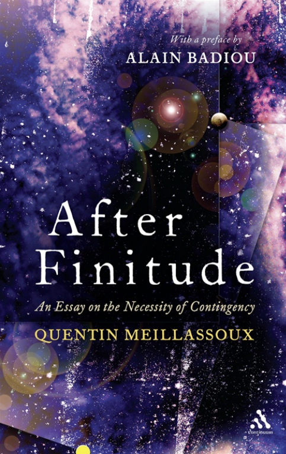
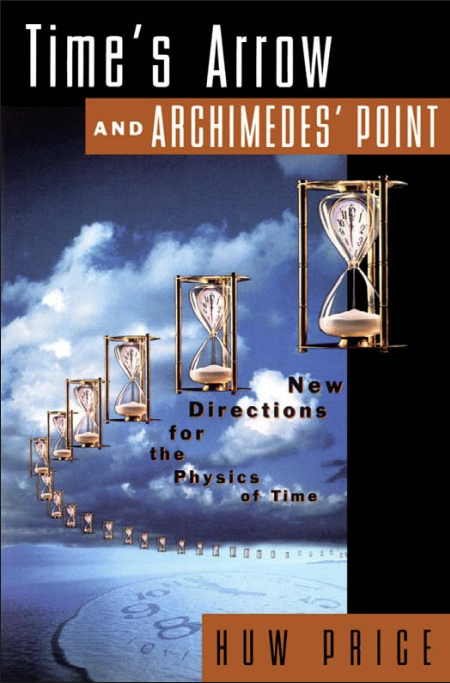

By Reza
 
Introduction
This is a double-book-review of two philosophy books, with different focuses, but make a related point on anthropocentrism.
As a short synopsis, Meillassoux’s book speaks from his school of speculative realism, refuting Kant and Hume, as well as those who lived after his critical revolution like Deleuze and Wittgenstein, to support the apparently-outdated Descartes. Price’s is a philosophy of physics book, discussing topics like quantum mechanics and thermodynamics, and how they relate to a symmetric view of physical laws.
The most meaningful way to read Meillassoux alongside Price is to treat both as a two-front campaign against the same foe, namely our habit of mistaking a parochial standpoint for a structure of reality.
- In After Finitude, Meillassoux dismantles the correlationist[1] claim that we can speak only of the Kantian world–for–us, extracting from a thought experiment about ancestral ‘arche-fossils’ a demand for thinking a world without us and, crucially, a world in which the stability of law is not necessary.
- In Time’s Arrow and Archimedes’ Point, Price urges an ‘Archimedean’ stance outside our everyday temporal perspective, which he calls a ‘view from nowhen’, in order to separate genuine temporal structure from artifacts of agency and deliberation.
My point, however, is about free will. Read together, both authors tell us something about the free-will debate: Meillassoux secures a mind-independent contingency of laws, allowing us to genuinely act in the world, while Price shows why our idea that free will must aim forward is a projection of our asymmetric position as agents — true free will goes both ways microscopically, in the actual world.
This essay has six sections, this introduction excluded.
- Summary of Against Finitude
- Immanence
- Where Price Comes In
- Bridging the Two
- Appendix 1: Set Theory
- Appendix 2: Deleuze
Summary of Against Finitude
To begin with, consider Hume’s problem. Hume’s skepticism is that reason delivers, at most, the principle of non-contradiction, but fails to give a law that forces tomorrow to resemble today. He hence devalues reason, only to give value to conventionalism. Kant followed Hume. Instead of asking what things are in themselves, post-Kantian philosophy asks what forms of subjective givenness bind one’s own thoughts and the world. Twentieth-century heirs then elevated the media of correlation, through Wittgenstein’s language for analytic philosophy and Merleau-Ponty’s lived consciousness for phenomenology, and did it so thoroughly that philosophy ‘lost the great outdoors’, i.e., the mind-indifferent real. After Kant, critical philosophy destabilized theological and anti-theological dogmatisms alike: once the absolute is declared unthinkable, theological belief and unbelief both devolve into fideism (pure faith), since neither can be rationally grounded. Rational theology, like the western Judeo-Christian tradition, is of course challenged by the dominance of subjectivity, but absolute knowledge is also withheld from the subject. Indeed, Meillassoux surveys the classical options, such as Descartes’ objectivist mathematics, Kant’s thinkable-but-unknowable noumenon, Popper’s falsifiability that never allows laws themselves to vary, and concludes that the correlationist veto either strips science of its literal ancestral reach or collapses into a permissive marketplace of faiths.
The problem Meillassoux tackles is whether there can be any independent existence outside the mind:. His answer is yes, and he undergoes the task to justify his position.
Meillassoux reopens the early modern split between ‘primary’ and ‘secondary’ qualities after Kant moved the issue from Cartesian substances to correlations, seemingly making objectivity obsolete. He forces the issue with ancestrality and the archi-fossil: scientific claims about times prior to life (radioactive dating, cosmic background radiation) are meant literally, not as disguised counterfactuals about human inventions of a past. He emphasizes that if correlationism reinterprets those discoveries as about what construction of a past could be given to a subject, it voids their content.
Meillassoux’s tour de force is to pull off an improved version of Descartes without the latter’s faulty invocations of a perfect God in the ontological argument of the Meditations. What he does exactly is to extract an observation from within the givenness of subjectivity, then draw inferences that escape the subjectivity itself. Accordingly, the only necessity is the necessity of facticity, or factiality later in the book. That basically refers to the very fact that there is a world. Where you can deduce anything else, factiality cannot be deduced, but purely experienced. Here is the definition:
What I experience with facticity is not an objective reality, but rather the unsurpassable limits of objectivity confronted with the fact that there is a world; a world that is describable and perceptible, and structured by determinate invariants. It is the sheer fact of the world’s logicality, of its givenness in a representation, which evades the structures of logical and representational reason. The in-itself becomes opaque to the point where it is no longer possible to maintain that it exists, so that the term tends to disappear to the benefit of facticity alone.
Facticity thereby forces us to grasp the ‘possibility’ of that which is wholly other to the world, but which resides in the midst of the world as such. Yet it is necessary to place inverted commas around the term ‘possibility’ insofar as what is operative in facticity is not knowledge of the actual possibility of the wholly other, but rather our inability to establish its impossibility. It is a possibility which is itself hypothetical, indicating that for us every hypothesis concerning the in-itself remains equally valid – that is, that it is necessary, that it is not, that it is contingent, etc.
The structure of his justification goes like (A) the principle of non-contradiction remains binding, because an inconsistent being would be necessary (something is either X or not X, so some form of it must always exist), which is precisely what the absolute forbids, (B) there are no necessary beings or necessary laws, (C) non-contradiction, while binding on what is thinkable, does not legislate which consistent arrangement of laws obtains. Hence, the world need not be the way it is, and even laws can change, but this change itself is the original ground state.
I think (A) is not hard to grasp. Even if one disagrees (ex. adopting fuzzy logic), it’s obvious what Meillassoux’s argument would be.
How is (B) justified? For starters, Meillassoux distinguishes chance from true contingency, because probabilistic chance presupposes stable frameworks (ex. a die’s faces, fixed sampling conditions) and thus cannot model law’s groundlessness. Genuine factiality can’t be modeled as draws from a fixed urn. Consequently, he refuses a world in which law changes according to a meta-law of stochastic transitions and instead pictures a time whose very capacity is to de-stabilize any determinate law without reason, which is what he elsewhere calls the ‘lawless destruction of every physical law’. He draws from Cantor’s mathematical lesson that any given totality